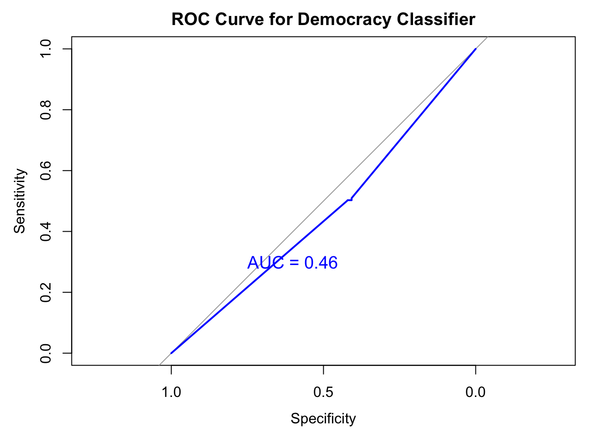

liwc_df <- liwc_df %>%
mutate(sovereignty = ifelse(str_detect(text, "sovereignty"), 1, 0),
intervention = ifelse(str_detect(text, "intervention"), 1, 0),
human_rights = ifelse(str_detect(text, "human rights"), 1, 0)) %>%
mutate(sovereignty_count = str_count(text, "sovereignty"),
intervention_count = str_count(text, "intervention"),
human_rights_count = str_count(text, "human rights"))liwc_modeling
Introduction
In this project, I use linguistic features of state representatives’ speech transcripts from the United Nations General Debate Corpus (UNGDC) to predict the regime type. The goal is twofold. First, we aim at running a hard test for a hypothesis that countries identified with distinct regime types show different linguistic styles. If I can predict the speaker’s regime type based on linguistic features, it is a strong indication of the difference in linguistic features across regime types. Second, this project analyzes key linguistic features that act as a strong signal of the state’s regime type. I further interpret substantive implication of strong coefficients and check how consistent their degrees of significance are across the models.
This script uses the scores of LIWC features and merges with country-year level meta data. "data/raw/controls/controls.csv" has a battery of country-year level variables that might potentially confound the statistical modeling. With liwc_meta dataset, at the country-year level, I run a series of statistical models that probe the relationship between linguistic features and sentiment scores of that speech. To preview, LIWC features alone have a strong predictive power on regime types, even without the help of meta data.
I test whether there is a correlation between a country’s invocation of international legal norms and the regime type. Among many, I generate three key legal principles that are prominent throughout the history of international politics. These are principle of sovereignty, principle of non-intervention, and the principle of human rights. Binary variables capture whether each principle was invoked, and count variables measure the number of time it was mentioned within one speech.
Variables on legal norms
- Three binary variables:
sovereignty,intervention, andhuman_rights. These are coded 1 when detected at least one time during the speech, 0 otherwise. - Three count variables:
sovereignty_count,intervention_count,human_rights_count. These variables are the number of keywords appearing during the speech.
Statistical Modeling
Using random effects model when the unit-specific intercepts have correlation with the input variables, and eventually lead to omitted variable bias. I suspect this would not be the case, as the linguistic features (inputs) often have high correlation with time invariant characteristics of countries. However, there does not exist a consistent theoretical conjecture on the correlation between these two. To accommodate such uncertainty, we also supplement the result by using fixed effects model.
Model 0: pooled model with LIWC features
plm package does not allow a dot feature ( y ~ . ) which selects all the columns except for the specified dependent variable. In order to avoid manual entry of all the LIWC features, I use a function called “expand_formula” from a StackOverflow.
"
Input: dependent variable in a character form, names of the input features
Output: formula ready to be used for plm package.
Example: expand_formula(output ~ .,names(data))
output ~ x1 + x2 + ... + xn
"[1] "\n Input: dependent variable in a character form, names of the input features\n Output: formula ready to be used for plm package. \n Example: expand_formula(output ~ .,names(data)) \n output ~ x1 + x2 + ... + xn\n "expand_formula <-
function(form="A ~.",varNames=c("A","B","C")){
has_dot <- any(grepl('.',form,fixed=TRUE))
if(has_dot){
ii <- intersect(as.character(as.formula(form)),
varNames)
varNames <- varNames[!grepl(paste0(ii,collapse='|'),varNames)]
exp <- paste0(varNames,collapse='+')
as.formula(gsub('.',exp,form,fixed=TRUE))
}
else as.formula(form)
}- I create separate blocks of variables to adjust inclusion of metadata for later analyses.
liwc_df<-liwc_df%>%
rename("function_feature" = "function")
liwc_df <- liwc_df[liwc_df$year < 2021, ]
validation <- liwc_df[liwc_df$year >= 2021, ]
print(dim(liwc_df))[1] 10181 191liwc_inputs<-liwc_df[, 5:122]
id <- liwc_df[, 1:3]
y <- liwc_df[, 149]
controls <- liwc_df[, c(126:148, 150:191)]
data <- cbind(y, id, liwc_inputs)
data_controls<- cbind(y, id, liwc_inputs, controls)
controls_only<- cbind(y, id, controls)Result of statistical analysis
To supplement machine-learning approach of regression, I present a set of conventional statistical tests accounting for error correlation.
model <-plm(expand_formula("dd_democracy ~. ", names(data)),
data = data,
index = c("ccode_iso", "year"),
model = "within"
)
# standard error clustered by both time and group.
model_cluster_twoway <- kable(
tidy(coeftest(model, vcov=vcovDC(model, type="sss",
caption= "Pooled model with cluster robust standard errors"))))Warning in sqrt(diag(se)): NaNs produced# standard error clustered by time.
model_cluster_time<- kable(
tidy(coeftest(model, vcov=vcovHC(model, type="sss", cluster="time"),
caption = "Pooled model with clustering around time")))
# standard error clustered by country
model_cluster_country <- kable(
tidy(coeftest(model, vcov=vcovHC(model, type="sss", cluster="group"),
caption = "Pooled model with clustering around country")))
model_summary <- modelsummary(
model,
stars = TRUE,
vcov = list(
vcovDC(model, type = "sss"),
vcovHC(model, type = "sss", cluster = "time"),
vcovHC(model, type = "sss", cluster = "group")
),
caption = "Pooled model with different types of standard errors",
output = "kableExtra",
escape = FALSE
)
model_summary %>%kable_classic("hover",
full_width=F,
html_font = "Cambria")%>%
scroll_box(width = "100%", height = "400px")| (1) | (2) | (3) | |
|---|---|---|---|
| year1951 | −0.045 | −0.045 | −0.045 |
| (0.059) | (0.059) | (0.059) | |
| year1952 | 0.041 | 0.041 | 0.041 |
| (0.062) | (0.062) | (0.062) | |
| year1953 | 0.010 | 0.010 | 0.010 |
| (0.061) | (0.061) | (0.061) | |
| year1954 | 0.003 | 0.003 | 0.003 |
| (0.062) | (0.062) | (0.062) | |
| year1955 | 0.002 | 0.002 | 0.002 |
| (0.062) | (0.062) | (0.062) | |
| year1956 | −0.039 | −0.039 | −0.039 |
| (0.056) | (0.056) | (0.056) | |
| year1957 | −0.072 | −0.072 | −0.072 |
| (0.055) | (0.055) | (0.055) | |
| year1958 | −0.045 | −0.045 | −0.045 |
| (0.055) | (0.055) | (0.055) | |
| year1959 | −0.040 | −0.040 | −0.040 |
| (0.055) | (0.055) | (0.055) | |
| year1960 | −0.009 | −0.009 | −0.009 |
| (0.055) | (0.055) | (0.055) | |
| year1961 | 0.017 | 0.017 | 0.017 |
| (0.055) | (0.055) | (0.055) | |
| year1962 | −0.014 | −0.014 | −0.014 |
| (0.053) | (0.053) | (0.053) | |
| year1963 | −0.061 | −0.061 | −0.061 |
| (0.053) | (0.053) | (0.053) | |
| year1964 | −0.046 | −0.046 | −0.046 |
| (0.053) | (0.053) | (0.053) | |
| year1965 | −0.050 | −0.050 | −0.050 |
| (0.053) | (0.053) | (0.053) | |
| year1966 | −0.067 | −0.067 | −0.067 |
| (0.054) | (0.054) | (0.054) | |
| year1967 | −0.077 | −0.077 | −0.077 |
| (0.053) | (0.053) | (0.053) | |
| year1968 | −0.107* | −0.107* | −0.107* |
| (0.053) | (0.053) | (0.053) | |
| year1969 | −0.099+ | −0.099+ | −0.099+ |
| (0.053) | (0.053) | (0.053) | |
| year1970 | −0.061 | −0.061 | −0.061 |
| (0.056) | (0.056) | (0.056) | |
| year1971 | −0.078 | −0.078 | −0.078 |
| (0.052) | (0.052) | (0.052) | |
| year1972 | −0.080 | −0.080 | −0.080 |
| (0.051) | (0.051) | (0.051) | |
| year1973 | −0.098+ | −0.098+ | −0.098+ |
| (0.052) | (0.052) | (0.052) | |
| year1974 | −0.081 | −0.081 | −0.081 |
| (0.052) | (0.052) | (0.052) | |
| year1975 | −0.078 | −0.078 | −0.078 |
| (0.051) | (0.051) | (0.051) | |
| year1976 | −0.084 | −0.084 | −0.084 |
| (0.051) | (0.051) | (0.051) | |
| year1977 | −0.090+ | −0.090+ | −0.090+ |
| (0.051) | (0.051) | (0.051) | |
| year1978 | −0.074 | −0.074 | −0.074 |
| (0.051) | (0.051) | (0.051) | |
| year1979 | −0.065 | −0.065 | −0.065 |
| (0.051) | (0.051) | (0.051) | |
| year1980 | −0.048 | −0.048 | −0.048 |
| (0.051) | (0.051) | (0.051) | |
| year1981 | −0.044 | −0.044 | −0.044 |
| (0.051) | (0.051) | (0.051) | |
| year1982 | −0.062 | −0.062 | −0.062 |
| (0.051) | (0.051) | (0.051) | |
| year1983 | −0.016 | −0.016 | −0.016 |
| (0.051) | (0.051) | (0.051) | |
| year1984 | −0.015 | −0.015 | −0.015 |
| (0.051) | (0.051) | (0.051) | |
| year1985 | −0.052 | −0.052 | −0.052 |
| (0.052) | (0.052) | (0.052) | |
| year1986 | −0.025 | −0.025 | −0.025 |
| (0.052) | (0.052) | (0.052) | |
| year1987 | −0.031 | −0.031 | −0.031 |
| (0.052) | (0.052) | (0.052) | |
| year1988 | −0.016 | −0.016 | −0.016 |
| (0.052) | (0.052) | (0.052) | |
| year1989 | 0.007 | 0.007 | 0.007 |
| (0.052) | (0.052) | (0.052) | |
| year1990 | 0.054 | 0.054 | 0.054 |
| (0.052) | (0.052) | (0.052) | |
| year1991 | 0.052 | 0.052 | 0.052 |
| (0.052) | (0.052) | (0.052) | |
| year1992 | 0.086+ | 0.086+ | 0.086+ |
| (0.051) | (0.051) | (0.051) | |
| year1993 | 0.102* | 0.102* | 0.102* |
| (0.051) | (0.051) | (0.051) | |
| year1994 | 0.112* | 0.112* | 0.112* |
| (0.051) | (0.051) | (0.051) | |
| year1995 | 0.112* | 0.112* | 0.112* |
| (0.051) | (0.051) | (0.051) | |
| year1996 | 0.098+ | 0.098+ | 0.098+ |
| (0.052) | (0.052) | (0.052) | |
| year1997 | 0.079 | 0.079 | 0.079 |
| (0.052) | (0.052) | (0.052) | |
| year1998 | 0.065 | 0.065 | 0.065 |
| (0.052) | (0.052) | (0.052) | |
| year1999 | 0.080 | 0.080 | 0.080 |
| (0.052) | (0.052) | (0.052) | |
| year2000 | 0.082 | 0.082 | 0.082 |
| (0.052) | (0.052) | (0.052) | |
| year2001 | 0.107* | 0.107* | 0.107* |
| (0.053) | (0.053) | (0.053) | |
| year2002 | 0.094+ | 0.094+ | 0.094+ |
| (0.053) | (0.053) | (0.053) | |
| year2003 | 0.086+ | 0.086+ | 0.086+ |
| (0.052) | (0.052) | (0.052) | |
| year2004 | 0.089+ | 0.089+ | 0.089+ |
| (0.053) | (0.053) | (0.053) | |
| year2005 | 0.084 | 0.084 | 0.084 |
| (0.052) | (0.052) | (0.052) | |
| year2006 | 0.090+ | 0.090+ | 0.090+ |
| (0.052) | (0.052) | (0.052) | |
| year2007 | 0.089+ | 0.089+ | 0.089+ |
| (0.053) | (0.053) | (0.053) | |
| year2008 | 0.106* | 0.106* | 0.106* |
| (0.053) | (0.053) | (0.053) | |
| year2009 | 0.124* | 0.124* | 0.124* |
| (0.053) | (0.053) | (0.053) | |
| year2010 | 0.098+ | 0.098+ | 0.098+ |
| (0.053) | (0.053) | (0.053) | |
| year2011 | 0.112* | 0.112* | 0.112* |
| (0.053) | (0.053) | (0.053) | |
| year2012 | 0.144** | 0.144** | 0.144** |
| (0.053) | (0.053) | (0.053) | |
| year2013 | 0.120* | 0.120* | 0.120* |
| (0.053) | (0.053) | (0.053) | |
| year2014 | 0.135* | 0.135* | 0.135* |
| (0.053) | (0.053) | (0.053) | |
| year2015 | 0.137* | 0.137* | 0.137* |
| (0.054) | (0.054) | (0.054) | |
| year2016 | 0.118* | 0.118* | 0.118* |
| (0.053) | (0.053) | (0.053) | |
| year2017 | 0.147** | 0.147** | 0.147** |
| (0.053) | (0.053) | (0.053) | |
| year2018 | 0.109* | 0.109* | 0.109* |
| (0.053) | (0.053) | (0.053) | |
| year2019 | 0.116* | 0.116* | 0.116* |
| (0.054) | (0.054) | (0.054) | |
| year2020 | 0.119* | 0.119* | 0.119* |
| (0.060) | (0.060) | (0.060) | |
| WC | 0.000+ | 0.000+ | 0.000+ |
| (0.000) | (0.000) | (0.000) | |
| Analytic | 0.006*** | 0.006*** | 0.006*** |
| (0.002) | (0.002) | (0.002) | |
| Clout | 0.005* | 0.005* | 0.005* |
| (0.002) | (0.002) | (0.002) | |
| Authentic | 0.002 | 0.002 | 0.002 |
| (0.003) | (0.003) | (0.003) | |
| Tone | 0.001 | 0.001 | 0.001 |
| (0.001) | (0.001) | (0.001) | |
| WPS | −0.002*** | −0.002*** | −0.002*** |
| (0.000) | (0.000) | (0.000) | |
| BigWords | −0.004 | −0.004 | −0.004 |
| (0.003) | (0.003) | (0.003) | |
| Dic | −0.004 | −0.004 | −0.004 |
| (0.005) | (0.005) | (0.005) | |
| Linguistic | 0.024* | 0.024* | 0.024* |
| (0.010) | (0.010) | (0.010) | |
| function_feature | −0.037*** | −0.037*** | −0.037*** |
| (0.011) | (0.011) | (0.011) | |
| pronoun | 0.156 | 0.156 | 0.156 |
| (0.557) | (0.557) | (0.557) | |
| ppron | −0.220 | −0.220 | −0.220 |
| (0.558) | (0.558) | (0.558) | |
| i | 0.160*** | 0.160*** | 0.160*** |
| (0.039) | (0.039) | (0.039) | |
| we | 0.043 | 0.043 | 0.043 |
| (0.034) | (0.034) | (0.034) | |
| you | 0.040 | 0.040 | 0.040 |
| (0.039) | (0.039) | (0.039) | |
| shehe | 0.092* | 0.092* | 0.092* |
| (0.046) | (0.046) | (0.046) | |
| they | 0.040 | 0.040 | 0.040 |
| (0.032) | (0.032) | (0.032) | |
| ipron | −0.121 | −0.121 | −0.121 |
| (0.557) | (0.557) | (0.557) | |
| det | 0.004 | 0.004 | 0.004 |
| (0.007) | (0.007) | (0.007) | |
| article | 0.004 | 0.004 | 0.004 |
| (0.010) | (0.010) | (0.010) | |
| number | 0.002 | 0.002 | 0.002 |
| (0.009) | (0.009) | (0.009) | |
| prep | 0.010 | 0.010 | 0.010 |
| (0.009) | (0.009) | (0.009) | |
| auxverb | 0.038** | 0.038** | 0.038** |
| (0.014) | (0.014) | (0.014) | |
| adverb | 0.017+ | 0.017+ | 0.017+ |
| (0.009) | (0.009) | (0.009) | |
| conj | 0.026** | 0.026** | 0.026** |
| (0.009) | (0.009) | (0.009) | |
| negate | 0.055* | 0.055* | 0.055* |
| (0.022) | (0.022) | (0.022) | |
| verb | −0.012 | −0.012 | −0.012 |
| (0.012) | (0.012) | (0.012) | |
| adj | −0.024** | −0.024** | −0.024** |
| (0.009) | (0.009) | (0.009) | |
| quantity | 0.024** | 0.024** | 0.024** |
| (0.009) | (0.009) | (0.009) | |
| Drives | −0.099*** | −0.099*** | −0.099*** |
| (0.027) | (0.027) | (0.027) | |
| affiliation | 0.108*** | 0.108*** | 0.108*** |
| (0.028) | (0.028) | (0.028) | |
| achieve | 0.110*** | 0.110*** | 0.110*** |
| (0.026) | (0.026) | (0.026) | |
| power | 0.099*** | 0.099*** | 0.099*** |
| (0.027) | (0.027) | (0.027) | |
| Cognition | −0.036 | −0.036 | −0.036 |
| (0.049) | (0.049) | (0.049) | |
| allnone | −0.015 | −0.015 | −0.015 |
| (0.050) | (0.050) | (0.050) | |
| cogproc | 0.032 | 0.032 | 0.032 |
| (0.050) | (0.050) | (0.050) | |
| insight | 0.031 | 0.031 | 0.031 |
| (0.020) | (0.020) | (0.020) | |
| cause | 0.003 | 0.003 | 0.003 |
| (0.013) | (0.013) | (0.013) | |
| discrep | 0.008 | 0.008 | 0.008 |
| (0.021) | (0.021) | (0.021) | |
| tentat | 0.018 | 0.018 | 0.018 |
| (0.013) | (0.013) | (0.013) | |
| certitude | 0.003 | 0.003 | 0.003 |
| (0.015) | (0.015) | (0.015) | |
| differ | 0.037 | 0.037 | 0.037 |
| (0.024) | (0.024) | (0.024) | |
| memory | 0.038 | 0.038 | 0.038 |
| (0.058) | (0.058) | (0.058) | |
| Affect | −0.074 | −0.074 | −0.074 |
| (0.126) | (0.126) | (0.126) | |
| tone_pos | 0.050 | 0.050 | 0.050 |
| (0.128) | (0.128) | (0.128) | |
| tone_neg | 0.078 | 0.078 | 0.078 |
| (0.128) | (0.128) | (0.128) | |
| emotion | 0.095 | 0.095 | 0.095 |
| (0.120) | (0.120) | (0.120) | |
| emo_pos | −0.065 | −0.065 | −0.065 |
| (0.121) | (0.121) | (0.121) | |
| emo_neg | −0.143 | −0.143 | −0.143 |
| (0.126) | (0.126) | (0.126) | |
| emo_anx | 0.038 | 0.038 | 0.038 |
| (0.054) | (0.054) | (0.054) | |
| emo_anger | 0.040 | 0.040 | 0.040 |
| (0.048) | (0.048) | (0.048) | |
| emo_sad | 0.111+ | 0.111+ | 0.111+ |
| (0.057) | (0.057) | (0.057) | |
| swear | −0.077 | −0.077 | −0.077 |
| (0.207) | (0.207) | (0.207) | |
| Social | −0.017 | −0.017 | −0.017 |
| (0.012) | (0.012) | (0.012) | |
| socbehav | 0.031+ | 0.031+ | 0.031+ |
| (0.016) | (0.016) | (0.016) | |
| prosocial | 0.011 | 0.011 | 0.011 |
| (0.014) | (0.014) | (0.014) | |
| polite | −0.027 | −0.027 | −0.027 |
| (0.021) | (0.021) | (0.021) | |
| conflict | 0.012 | 0.012 | 0.012 |
| (0.021) | (0.021) | (0.021) | |
| moral | 0.014 | 0.014 | 0.014 |
| (0.015) | (0.015) | (0.015) | |
| comm | −0.023 | −0.023 | −0.023 |
| (0.015) | (0.015) | (0.015) | |
| socrefs | 0.009 | 0.009 | 0.009 |
| (0.020) | (0.020) | (0.020) | |
| family | −0.034 | −0.034 | −0.034 |
| (0.038) | (0.038) | (0.038) | |
| friend | −0.135+ | −0.135+ | −0.135+ |
| (0.077) | (0.077) | (0.077) | |
| female | 0.025 | 0.025 | 0.025 |
| (0.027) | (0.027) | (0.027) | |
| male | −0.025 | −0.025 | −0.025 |
| (0.026) | (0.026) | (0.026) | |
| Culture | −0.396+ | −0.396+ | −0.396+ |
| (0.230) | (0.230) | (0.230) | |
| politic | 0.407+ | 0.407+ | 0.407+ |
| (0.230) | (0.230) | (0.230) | |
| ethnicity | 0.435+ | 0.435+ | 0.435+ |
| (0.229) | (0.229) | (0.229) | |
| tech | 0.387+ | 0.387+ | 0.387+ |
| (0.231) | (0.231) | (0.231) | |
| Lifestyle | −0.001 | −0.001 | −0.001 |
| (0.030) | (0.030) | (0.030) | |
| leisure | −0.068 | −0.068 | −0.068 |
| (0.043) | (0.043) | (0.043) | |
| home | 0.077 | 0.077 | 0.077 |
| (0.054) | (0.054) | (0.054) | |
| work | 0.015 | 0.015 | 0.015 |
| (0.029) | (0.029) | (0.029) | |
| money | 0.017 | 0.017 | 0.017 |
| (0.026) | (0.026) | (0.026) | |
| relig | 0.008 | 0.008 | 0.008 |
| (0.035) | (0.035) | (0.035) | |
| Physical | 0.025 | 0.025 | 0.025 |
| (0.022) | (0.022) | (0.022) | |
| health | 0.015 | 0.015 | 0.015 |
| (0.034) | (0.034) | (0.034) | |
| illness | −0.019 | −0.019 | −0.019 |
| (0.043) | (0.043) | (0.043) | |
| wellness | −0.006 | −0.006 | −0.006 |
| (0.066) | (0.066) | (0.066) | |
| mental | −0.008 | −0.008 | −0.008 |
| (0.127) | (0.127) | (0.127) | |
| substances | −0.017 | −0.017 | −0.017 |
| (0.096) | (0.096) | (0.096) | |
| sexual | −0.002 | −0.002 | −0.002 |
| (0.051) | (0.051) | (0.051) | |
| food | 0.033 | 0.033 | 0.033 |
| (0.034) | (0.034) | (0.034) | |
| death | −0.042 | −0.042 | −0.042 |
| (0.042) | (0.042) | (0.042) | |
| need | −0.017 | −0.017 | −0.017 |
| (0.012) | (0.012) | (0.012) | |
| want | −0.014 | −0.014 | −0.014 |
| (0.026) | (0.026) | (0.026) | |
| acquire | −0.047* | −0.047* | −0.047* |
| (0.024) | (0.024) | (0.024) | |
| lack | 0.076** | 0.076** | 0.076** |
| (0.025) | (0.025) | (0.025) | |
| fulfill | 0.020 | 0.020 | 0.020 |
| (0.027) | (0.027) | (0.027) | |
| fatigue | 0.488* | 0.488* | 0.488* |
| (0.201) | (0.201) | (0.201) | |
| reward | 0.053* | 0.053* | 0.053* |
| (0.023) | (0.023) | (0.023) | |
| risk | −0.005 | −0.005 | −0.005 |
| (0.012) | (0.012) | (0.012) | |
| curiosity | −0.053* | −0.053* | −0.053* |
| (0.024) | (0.024) | (0.024) | |
| allure | 0.006 | 0.006 | 0.006 |
| (0.007) | (0.007) | (0.007) | |
| Perception | 0.065* | 0.065* | 0.065* |
| (0.028) | (0.028) | (0.028) | |
| attention | −0.070* | −0.070* | −0.070* |
| (0.032) | (0.032) | (0.032) | |
| motion | −0.057+ | −0.057+ | −0.057+ |
| (0.030) | (0.030) | (0.030) | |
| space | −0.062+ | −0.062+ | −0.062+ |
| (0.032) | (0.032) | (0.032) | |
| visual | −0.049 | −0.049 | −0.049 |
| (0.032) | (0.032) | (0.032) | |
| auditory | −0.016 | −0.016 | −0.016 |
| (0.054) | (0.054) | (0.054) | |
| feeling | −0.072+ | −0.072+ | −0.072+ |
| (0.041) | (0.041) | (0.041) | |
| time | −0.012 | −0.012 | −0.012 |
| (0.017) | (0.017) | (0.017) | |
| focuspast | −0.006 | −0.006 | −0.006 |
| (0.009) | (0.009) | (0.009) | |
| focuspresent | −0.010 | −0.010 | −0.010 |
| (0.009) | (0.009) | (0.009) | |
| focusfuture | 0.009 | 0.009 | 0.009 |
| (0.011) | (0.011) | (0.011) | |
| Conversation | 0.627 | 0.627 | 0.627 |
| (0.631) | (0.631) | (0.631) | |
| netspeak | −0.726 | −0.726 | −0.726 |
| (0.605) | (0.605) | (0.605) | |
| assent | −0.641 | −0.641 | −0.641 |
| (0.626) | (0.626) | (0.626) | |
| nonflu | 1.015 | 1.015 | 1.015 |
| (0.910) | (0.910) | (0.910) | |
| filler | −5.699 | −5.699 | −5.699 |
| (3.623) | (3.623) | (3.623) | |
| AllPunc | 0.551 | 0.551 | 0.551 |
| (0.405) | (0.405) | (0.405) | |
| Period | −0.542 | −0.542 | −0.542 |
| (0.406) | (0.406) | (0.406) | |
| Comma | −0.556 | −0.556 | −0.556 |
| (0.406) | (0.406) | (0.406) | |
| QMark | −0.509 | −0.509 | −0.509 |
| (0.407) | (0.407) | (0.407) | |
| Exclam | −0.749+ | −0.749+ | −0.749+ |
| (0.422) | (0.422) | (0.422) | |
| Apostro | −0.611 | −0.611 | −0.611 |
| (0.406) | (0.406) | (0.406) | |
| OtherP | −0.553 | −0.553 | −0.553 |
| (0.406) | (0.406) | (0.406) | |
| Num.Obs. | 9646 | 9646 | 9646 |
| R2 | 0.191 | 0.191 | 0.191 |
| R2 Adj. | 0.159 | 0.159 | 0.159 |
| AIC | 2036.9 | 2036.9 | 2036.9 |
| BIC | 3385.7 | 3385.7 | 3385.7 |
| RMSE | 0.26 | 0.26 | 0.26 |
| Std.Errors | Custom | Custom | Custom |
| + p |
Prediction regression and cross valication
Separate test data from validation set.
Take out the test data set (just a few years) and then split for th e validation data. In my dataset, I carve out observations from two years (2021 and 2022) as my test data.
Within the test data, I split the data in to two groups: pre and post Cold War with a threshold of 1990. I create several models based on the pre-Cold War era and generate model evaluation metrics by applying the models to the post Cold War era.
Experiment 1: Random CV
This includes both country level meta data and LIWC features. I split the training and testing dataset randomly.
data_controls$ccode_iso<-as.factor(data_controls$ccode_iso)
# Remove the country variable from the training data
data_controls <- data_controls[, !(names(data_controls) %in% c("ccode_iso", "year", "session", "dd_regime"))]
data_controls <- data_controls[, !(names(data_controls) %in% c("democracy"))]
data_controls<-data_controls%>%dplyr::select(-Segment)
set.seed(1)
data_controls$dd_democracy<-as.factor(data_controls$dd_democracy)
split <- rsample::initial_split(data_controls, prop = 0.7)
trainN <- rsample::training(split)
testN <- rsample::testing(split)
model0 <- glm(
formula = dd_democracy ~ . ,
family = "binomial",
data = trainN)
model0_pred<-predict(model0, testN, type = "response")
model0_diagnosis <- as.factor(ifelse(model0_pred > 0.5, 1,0))
# Compute confusion matrix
caret::confusionMatrix(as.factor(model0_diagnosis), as.factor(testN$dd_democracy))Confusion Matrix and Statistics
Reference
Prediction 0 1
0 583 36
1 34 571
Accuracy : 0.9428
95% CI : (0.9283, 0.9552)
No Information Rate : 0.5041
P-Value [Acc > NIR] : <2e-16
Kappa : 0.8856
Mcnemar's Test P-Value : 0.9049
Sensitivity : 0.9449
Specificity : 0.9407
Pos Pred Value : 0.9418
Neg Pred Value : 0.9438
Prevalence : 0.5041
Detection Rate : 0.4763
Detection Prevalence : 0.5057
Balanced Accuracy : 0.9428
'Positive' Class : 0
Interpretation of the model
Summary table of the estimation results highlight features that play important role in predicting the regime type. Below plot displays the fitted model of how a linguistic feature of “focuspast” affects an outcome of regime type. It seems that there is a weak but consistent positive correlation between the linguistic tendency to focus on the past and the regime type. This pattern is consistent regardless of a country’s history of being a former colony.
model_summary2<-modelsummary(model0,
stars = TRUE,
output = "kableExtra",
escape = FALSE)
model_summary2%>%kable_classic(full_width=F, html_font = "Cambria")%>%
scroll_box(width = "100%", height = "600px")| (1) | |
|---|---|
| (Intercept) | 56.129** |
| (19.600) | |
| WC | 0.000 |
| (0.000) | |
| Analytic | −0.177* |
| (0.082) | |
| Clout | 0.073 |
| (0.102) | |
| Authentic | 0.208 |
| (0.146) | |
| Tone | 0.048 |
| (0.073) | |
| WPS | 0.032 |
| (0.021) | |
| BigWords | 0.002 |
| (0.136) | |
| Dic | −0.356+ |
| (0.214) | |
| Linguistic | −0.383 |
| (0.467) | |
| function_feature | 0.212 |
| (0.541) | |
| pronoun | −23.295 |
| (25.957) | |
| ppron | 20.785 |
| (25.931) | |
| i | 1.727 |
| (1.848) | |
| we | 0.977 |
| (1.540) | |
| you | 1.116 |
| (1.819) | |
| shehe | 4.889* |
| (2.388) | |
| they | 0.385 |
| (1.558) | |
| ipron | 23.246 |
| (25.984) | |
| det | 0.856* |
| (0.410) | |
| article | −0.558 |
| (0.531) | |
| number | −0.578 |
| (0.383) | |
| prep | 0.188 |
| (0.436) | |
| auxverb | −0.518 |
| (0.674) | |
| adverb | −0.545 |
| (0.454) | |
| conj | 0.038 |
| (0.435) | |
| negate | −0.553 |
| (0.945) | |
| verb | 0.287 |
| (0.540) | |
| adj | 0.015 |
| (0.447) | |
| quantity | −0.104 |
| (0.436) | |
| Drives | 0.142 |
| (1.353) | |
| affiliation | −0.450 |
| (1.378) | |
| achieve | 0.702 |
| (1.336) | |
| power | 0.369 |
| (1.361) | |
| Cognition | 5.500* |
| (2.315) | |
| allnone | −6.289** |
| (2.383) | |
| cogproc | −4.793* |
| (2.373) | |
| insight | −1.021 |
| (0.985) | |
| cause | −1.302* |
| (0.630) | |
| discrep | 1.417 |
| (1.001) | |
| tentat | −0.535 |
| (0.667) | |
| certitude | −1.121 |
| (0.703) | |
| differ | −0.609 |
| (1.165) | |
| memory | −6.128* |
| (2.688) | |
| Affect | −0.022 |
| (5.690) | |
| tone_pos | −0.041 |
| (5.839) | |
| tone_neg | 0.831 |
| (5.769) | |
| emotion | −0.774 |
| (5.514) | |
| emo_pos | 0.844 |
| (5.602) | |
| emo_neg | 0.821 |
| (5.795) | |
| emo_anx | 1.537 |
| (2.562) | |
| emo_anger | −1.882 |
| (2.438) | |
| emo_sad | 0.102 |
| (2.483) | |
| swear | −5.161 |
| (7.616) | |
| Social | 0.380 |
| (0.576) | |
| socbehav | −0.103 |
| (0.707) | |
| prosocial | −1.245* |
| (0.578) | |
| polite | −0.159 |
| (0.885) | |
| conflict | −0.067 |
| (0.969) | |
| moral | −0.400 |
| (0.737) | |
| comm | −0.899 |
| (0.674) | |
| socrefs | 0.513 |
| (0.883) | |
| family | 1.600 |
| (1.729) | |
| friend | −1.118 |
| (4.068) | |
| female | −3.629*** |
| (0.893) | |
| male | −2.186 |
| (1.438) | |
| Culture | −13.922 |
| (12.687) | |
| politic | 13.677 |
| (12.684) | |
| ethnicity | 13.891 |
| (12.669) | |
| tech | 14.631 |
| (12.729) | |
| Lifestyle | −0.439 |
| (1.383) | |
| leisure | −0.848 |
| (1.967) | |
| home | 1.860 |
| (2.424) | |
| work | 0.167 |
| (1.329) | |
| money | 1.549 |
| (1.183) | |
| relig | 0.291 |
| (1.483) | |
| Physical | −0.310 |
| (1.005) | |
| health | 1.032 |
| (1.550) | |
| illness | −1.617 |
| (1.698) | |
| wellness | 2.602 |
| (2.940) | |
| mental | −7.307 |
| (6.068) | |
| substances | 7.125 |
| (4.889) | |
| sexual | 0.010 |
| (1.714) | |
| food | 1.069 |
| (1.163) | |
| death | 2.108 |
| (1.767) | |
| need | 0.204 |
| (0.543) | |
| want | 0.082 |
| (1.283) | |
| acquire | −0.196 |
| (1.053) | |
| lack | −2.447* |
| (0.981) | |
| fulfill | 3.340** |
| (1.235) | |
| fatigue | 5.842 |
| (9.757) | |
| reward | −1.613 |
| (0.991) | |
| risk | −0.493 |
| (0.529) | |
| curiosity | −0.879 |
| (1.112) | |
| allure | 0.618* |
| (0.305) | |
| Perception | −1.966 |
| (1.222) | |
| attention | 2.146 |
| (1.483) | |
| motion | 0.450 |
| (1.414) | |
| space | 0.839 |
| (1.507) | |
| visual | 2.029 |
| (1.462) | |
| auditory | −0.259 |
| (2.508) | |
| feeling | 1.492 |
| (2.047) | |
| time | −0.885 |
| (0.846) | |
| focuspast | 0.479 |
| (0.399) | |
| focuspresent | 0.187 |
| (0.395) | |
| focusfuture | 0.205 |
| (0.534) | |
| Conversation | 5.188 |
| (22.259) | |
| netspeak | 4.449 |
| (20.407) | |
| assent | −6.620 |
| (21.828) | |
| nonflu | 32.286 |
| (48.233) | |
| filler | −236.128 |
| (13385.385) | |
| AllPunc | 14.746 |
| (20.193) | |
| Period | −13.898 |
| (20.179) | |
| Comma | −14.805 |
| (20.192) | |
| QMark | −13.590 |
| (20.066) | |
| Exclam | −30.759 |
| (22.656) | |
| Apostro | −12.302 |
| (20.174) | |
| OtherP | −14.791 |
| (20.203) | |
| mid_dispute | 0.021 |
| (0.159) | |
| wdi_gdpcapcon2015 | 0.000*** |
| (0.000) | |
| wdi_gdpcapgr | 0.012 |
| (0.031) | |
| wdi_pop | 0.000 |
| (0.000) | |
| pts_ptss | −0.285 |
| (0.212) | |
| bmr_dem | 3.787*** |
| (0.473) | |
| kofgi_dr_eg | −0.156 |
| (0.307) | |
| kofgi_dr_ig | 0.285 |
| (0.911) | |
| kofgi_dr_pg | 0.010 |
| (0.309) | |
| kofgi_dr_sg | −0.206 |
| (0.300) | |
| wdi_log_gdpcapcon2015 | −0.931* |
| (0.373) | |
| wdi_log_pop | −1.365*** |
| (0.284) | |
| polity | 0.396 |
| (0.358) | |
| polity2 | 0.109 |
| (0.287) | |
| plty_xrcomp | 1.619*** |
| (0.403) | |
| plty_xropen | −0.274 |
| (0.210) | |
| plty_xconst | −0.989*** |
| (0.261) | |
| plty_parreg | 0.297 |
| (0.279) | |
| plty_parcomp | −0.994*** |
| (0.219) | |
| navco_num_campaign | 0.646 |
| (0.472) | |
| navco_campaign | −1.011 |
| (0.658) | |
| up_num_conflict | 0.144+ |
| (0.079) | |
| up_conflict | 0.090 |
| (0.383) | |
| up_num_war | −0.205 |
| (0.188) | |
| up_war | 0.589 |
| (0.542) | |
| v2x_polyarchy | −8.736 |
| (6.993) | |
| v2x_libdem | 17.852+ |
| (9.112) | |
| v2x_freexp_altinf | −10.215 |
| (22.267) | |
| v2x_frassoc_thick | 20.023*** |
| (5.353) | |
| v2xel_locelec | −2.467*** |
| (0.678) | |
| v2xel_regelec | 2.273*** |
| (0.636) | |
| v2mecenefm | 3.073*** |
| (0.535) | |
| v2mecrit | −0.454 |
| (0.498) | |
| v2mefemjrn | 0.092*** |
| (0.023) | |
| v2meharjrn | 0.944** |
| (0.361) | |
| v2mebias | 0.374 |
| (0.460) | |
| v2mecorrpt | −0.272 |
| (0.261) | |
| v2meslfcen | −0.201 |
| (0.369) | |
| v2x_accountability | 4.663** |
| (1.714) | |
| v2x_horacc | −0.724 |
| (0.681) | |
| v2x_diagacc | −6.909** |
| (2.274) | |
| v2xnp_regcorr | −10.914** |
| (3.705) | |
| v2x_civlib | 25.843 |
| (83.332) | |
| v2x_clphy | −8.202 |
| (27.502) | |
| v2x_clpol | −42.879 |
| (28.508) | |
| v2x_clpriv | −4.228 |
| (27.149) | |
| v2x_corr | 31.146*** |
| (6.097) | |
| v2x_pubcorr | −11.666*** |
| (2.679) | |
| v2jucorrdc | 1.927*** |
| (0.471) | |
| v2x_rule | −7.827* |
| (3.936) | |
| v2xcl_acjst | −2.272 |
| (1.535) | |
| v2xcs_ccsi | 1.947 |
| (3.536) | |
| v2x_freexp | 23.233+ |
| (13.869) | |
| v2xme_altinf | 9.918 |
| (10.429) | |
| v2xedvd_me_cent | 9.479** |
| (3.408) | |
| ht_colonial | −1.653** |
| (0.518) | |
| sovereignty | 1.113* |
| (0.461) | |
| intervention | 0.373 |
| (0.496) | |
| human_rights | 0.545 |
| (0.352) | |
| sovereignty_count | −0.300+ |
| (0.178) | |
| intervention_count | 0.201 |
| (0.212) | |
| human_rights_count | 0.086 |
| (0.091) | |
| Num.Obs. | 2828 |
| AIC | 909.2 |
| BIC | 1979.7 |
| Log.Lik. | −274.593 |
| RMSE | 0.16 |
| + p |
visreg(model0, xvar = "focusfuture", by = "ht_colonial", scale = "linear")Experiment 2: LIWC features only
I included linguistic style features as well as word counts(WC), the raw number of words within each speech Word counts can change the distribution of linguistic features, as the pool from which words come from can affect the count of dictionary words. Another alternative measures is Words per Sentence (WPS), average number of words within a sentence for each document. Big Words (BW) also captures the percentage of words that are 7 letters or longer. Dictionary (Dic) variable refers to the percentage of words that were captured by LIWC.
There are four summary variables; Analytical, Clout, Authenticity, and Emotional Tone. Each are constructed based on LIWC features as well as other psychological literature (boyd2015?; cohn2004?; kacewicz2014?; newman2003?). These summary variables range from 1 to 99, after standardization. Analytical thinking score increases when the speech includes formal, logical, and hierarchical patterns. Clout is intended to capture the degree in which the speaker displays one’s confidence, status, and leadership. Authenticity score increases when the speaker does not intend to regulate oneself and displays a spontaneous style. Emotional score is an overall tone of the speech, intended to show how positive or negative a speaker is.
Note that one word can be captured by different bags of dictionaries. For example, the word “we” will be counted toward a “affiliation”, “social reference”, and a pronoun dictionary.
LIWC-22 has additional features like “determiners,” that includes “this”, “first”, “three.” It also has a feature “Cognition,” that reflects different ways in which people process their thoughts. It is shown by dichotomous logical words, memory words, and words that reveal certainty. It also includes “political” as one of the three domains within the overarching “Culture” dimension. Examples for “political” construct are congress, parliament, president, democratic, law, and court.
data <- cbind(y, id, liwc_inputs)
data <- data[, !(names(data) %in% c("ccode_iso", "year"))]
split <- rsample::initial_split(data, prop = 0.7, strata = "dd_democracy")
trainN <- rsample::training(split)
testN <- rsample::testing(split)
model1 <- glm(
formula = dd_democracy ~ . - Segment,
family = "binomial",
data = trainN)
model1_pred<-predict(model1, testN, type = "response")
model1_diagnosis <- as.factor(ifelse(model1_pred > 0.5, 1,0))
# Compute confusion matrix
caret::confusionMatrix(as.factor(model1_diagnosis), as.factor(testN$dd_democracy))Confusion Matrix and Statistics
Reference
Prediction 0 1
0 1102 374
1 358 1059
Accuracy : 0.747
95% CI : (0.7307, 0.7627)
No Information Rate : 0.5047
P-Value [Acc > NIR] : <2e-16
Kappa : 0.4939
Mcnemar's Test P-Value : 0.5793
Sensitivity : 0.7548
Specificity : 0.7390
Pos Pred Value : 0.7466
Neg Pred Value : 0.7474
Prevalence : 0.5047
Detection Rate : 0.3809
Detection Prevalence : 0.5102
Balanced Accuracy : 0.7469
'Positive' Class : 0
# sensitivity is the true positive rate
# specificity is the true negative rate
ROC<-roc(response = testN$dd_democracy,
predictor = model1_pred,
levels = c(1, 0))Setting direction: controls > casesplot(ROC, col = "blue", main = "ROC Curve for Democracy Classifier")
aucValue <- auc(ROC)
print(paste("AUC:", aucValue))[1] "AUC: 0.824289975049948"text(x = 0.6, y = 0.3, label = paste("AUC =", round(aucValue, 3)),
cex = 1.2, col = "blue")Experiment 2b: LIWC features only with a smaller dataset
When I trained the model with only a small number of training dataset and tested against a large number test dataset, the model perform poorly with 52% of accuracy, as expected.
small_trainN <- data %>%
sample_n(size = 100, replace = FALSE)
model1b <- glm(
formula = dd_democracy ~ . ,
family = "binomial",
data = small_trainN)
model1b_pred<-predict(model1b, testN, type = "response")Warning in predict.lm(object, newdata, se.fit, scale = 1, type = if (type == :
prediction from rank-deficient fit; attr(*, "non-estim") has doubtful casesmodel1b_diagnosis <- as.factor(ifelse(model1b_pred > 0.5, 1,0))
# Compute confusion matrix
caret::confusionMatrix(as.factor(model1b_diagnosis), as.factor(testN$dd_democracy))Confusion Matrix and Statistics
Reference
Prediction 0 1
0 725 584
1 735 849
Accuracy : 0.5441
95% CI : (0.5257, 0.5623)
No Information Rate : 0.5047
P-Value [Acc > NIR] : 1.202e-05
Kappa : 0.089
Mcnemar's Test P-Value : 3.625e-05
Sensitivity : 0.4966
Specificity : 0.5925
Pos Pred Value : 0.5539
Neg Pred Value : 0.5360
Prevalence : 0.5047
Detection Rate : 0.2506
Detection Prevalence : 0.4525
Balanced Accuracy : 0.5445
'Positive' Class : 0
ROC<-roc(response = testN$dd_democracy,
predictor = model1b_pred,
levels = c(1, 0))Setting direction: controls < casesplot(ROC, col = "blue", main = "ROC Curve for Democracy Classifier")
aucValue <- auc(ROC)
print(paste("AUC:", aucValue))[1] "AUC: 0.459668384173446"text(x = 0.6, y = 0.3, label = paste("AUC =", round(aucValue, 3)),
cex = 1.2, col = "blue")
Experiment 3: Country level meta data only
I train the model using country-year level meta data alone. Caveat here is that some of the input features from the V-Dem data set are highly correlated with the output feature, “dd_democracy.” However, this model shows a high level of accuracy score of 91%.
# Remove the country variable from the training data
controls_only <- controls_only[, !(names(controls_only) %in% c("ccode_iso", "year"))]
set.seed(2)
split <- rsample::initial_split(controls_only, prop = 0.7, strata = "dd_democracy")
trainN <- rsample::training(split)
testN <- rsample::testing(split)
model3 <- glm(
formula = dd_democracy ~ .,
family = "binomial",
data = trainN)Warning: glm.fit: fitted probabilities numerically 0 or 1 occurredmodel3_pred<-predict(model3, testN, type = "response")
model3_diagnosis <- as.factor(ifelse(model3_pred > 0.5, 1,0))
# Compute confusion matrix
caret::confusionMatrix(as.factor(model3_diagnosis), as.factor(testN$dd_democracy))Confusion Matrix and Statistics
Reference
Prediction 0 1
0 601 4
1 1 581
Accuracy : 0.9958
95% CI : (0.9902, 0.9986)
No Information Rate : 0.5072
P-Value [Acc > NIR] : <2e-16
Kappa : 0.9916
Mcnemar's Test P-Value : 0.3711
Sensitivity : 0.9983
Specificity : 0.9932
Pos Pred Value : 0.9934
Neg Pred Value : 0.9983
Prevalence : 0.5072
Detection Rate : 0.5063
Detection Prevalence : 0.5097
Balanced Accuracy : 0.9958
'Positive' Class : 0
# sensitivity is the true positive rate
# specificity is the true negative rate
ROC<-roc(response = testN$dd_democracy,
predictor = model3_pred,
levels = c(1, 0))Setting direction: controls > casesplot(ROC, col = "blue", main = "ROC Curve for Democracy Classifier")
aucValue <- auc(ROC)
print(paste("AUC:", aucValue))[1] "AUC: 0.999900616179686"text(x = 0.6, y = 0.3, label = paste("AUC =", round(aucValue, 3)),
cex = 1.2, col = "blue")
Experiment 4: training on Pre-Cold war, testing on post-cold war
This is a harder test. I train the model using LIWC features alone and test its performance in post-cold war era.
Accuracy : 0.6989
No Information Rate : 0.5867
P-Value [Acc > NIR] : < 2.2e-16
Sensitivity : 0.5752
Specificity : 0.7860
Change in the number of democracies after the Cold War. Predicting less democracy because it hasn’t seen that many democracies.
data <- cbind(y, id, liwc_inputs)
pre <- data[data$year < 1990, ] #dimension 4430 X 121
post <- data[data$year >= 1990, ] # dimension 6138 X 121
# Remove the country variable from the training data
pre <- pre[, !(names(pre) %in% c("ccode_iso", "year", "democracy"))]
post <- post[, !(names(post) %in% c("ccode_iso", "year", "democracy"))]
model4 <- glm(
formula = dd_democracy ~ .,
family = "binomial",
data = pre)
model4_pred<-predict(model4, post, type = "response")Warning in predict.lm(object, newdata, se.fit, scale = 1, type = if (type == :
prediction from rank-deficient fit; attr(*, "non-estim") has doubtful casesmodel4_diagnosis <- as.factor(ifelse(model4_pred > 0.5, 1,0))
# Compute confusion matrix
caret::confusionMatrix(as.factor(model4_diagnosis), as.factor(post$dd_democracy))Confusion Matrix and Statistics
Reference
Prediction 0 1
0 1336 676
1 985 2619
Accuracy : 0.7042
95% CI : (0.6921, 0.7162)
No Information Rate : 0.5867
P-Value [Acc > NIR] : < 2.2e-16
Kappa : 0.3779
Mcnemar's Test P-Value : 4.116e-14
Sensitivity : 0.5756
Specificity : 0.7948
Pos Pred Value : 0.6640
Neg Pred Value : 0.7267
Prevalence : 0.4133
Detection Rate : 0.2379
Detection Prevalence : 0.3583
Balanced Accuracy : 0.6852
'Positive' Class : 0
# sensitivity is the true positive rate
# specificity is the true negative rate
ROC<-roc(response = post$dd_democracy,
predictor = model4_pred,
levels = c(1, 0))Setting direction: controls > casesplot(ROC, col = "blue", main = "ROC Curve for Democracy Classifier")
aucValue <- auc(ROC)
print(paste("AUC:", aucValue))[1] "AUC: 0.753212961552471"text(x = 0.6, y = 0.3, label = paste("AUC =", round(aucValue, 3)),
cex = 1.2, col = "blue")Experiment 3b: training on Post-Cold war, testing on Pre-cold war
This is a harder test. I train the model using LIWC features alone and test its performance in pre-cold war era. This is a reversed version of Experiment 4. Instead of predicting the later outcome based on earlier observations, I train the data on the post-Cold war era and see if it can correctly predict the past.
Accuracy : 0.599
95% CI : (0.5837, 0.6142) No Information Rate : 0.6357
P-Value [Acc > NIR] : 1
Sensitivity : 0.4602
Specificity : 0.8413
model4b <- glm(
formula = dd_democracy ~ .,
family = "binomial",
data = post)
model4b_pred<-predict(model4b, pre, type = "response")Warning in predict.lm(object, newdata, se.fit, scale = 1, type = if (type == :
prediction from rank-deficient fit; attr(*, "non-estim") has doubtful casesmodel4b_diagnosis <- as.factor(ifelse(model4b_pred > 0.5, 1,0))
# Compute confusion matrix
caret::confusionMatrix(as.factor(model4b_diagnosis), as.factor(pre$dd_democracy))Confusion Matrix and Statistics
Reference
Prediction 0 1
0 1169 231
1 1393 1237
Accuracy : 0.597
95% CI : (0.5817, 0.6122)
No Information Rate : 0.6357
P-Value [Acc > NIR] : 1
Kappa : 0.2557
Mcnemar's Test P-Value : <2e-16
Sensitivity : 0.4563
Specificity : 0.8426
Pos Pred Value : 0.8350
Neg Pred Value : 0.4703
Prevalence : 0.6357
Detection Rate : 0.2901
Detection Prevalence : 0.3474
Balanced Accuracy : 0.6495
'Positive' Class : 0
# sensitivity is the true positive rate
# specificity is the true negative rate
ROC<-roc(response = pre$dd_democracy,
predictor = model4b_pred,
levels = c(1, 0))Setting direction: controls > casesplot(ROC, col = "blue", main = "ROC Curve for Democracy Classifier")
aucValue <- auc(ROC)
print(paste("AUC:", aucValue))[1] "AUC: 0.718717761370863"text(x = 0.6, y = 0.3, label = paste("AUC =", round(aucValue, 3)),
cex = 1.2, col = "blue")Experiment 5: Splitting based on English-speaking countries
separate out countries by removing a set of countries, english speaking countries vs. non-english speaking countries. (translator as a confounder)
- First, load in the meta data about which language the leader chose. “Speeches are typically delivered in the native language. Based on the rules of the Assembly, all statements are then translated by UN staff into the six official languages of the UN. If a speech was delivered in a language other than English, Baturo et al.(2017) used the official English version provided by the UN. Therefore, all of the speeches in the UNGDC are in English.”
language <-read_excel("data/raw/language.xlsx")
language <- language%>%select(year="Year", ccode_iso = "ISO Code",lang = "Language" )
language <- language %>%
mutate(eng = ifelse(
is.na(lang), NA, ifelse(
lang %in% c("English"), 1, 0))) %>%
select(-lang)%>%
filter(!is.na(eng))
#baseline data includes liwc_inputs only
data <- cbind(y, id, liwc_inputs)
data<-data%>%
inner_join(language, by=c("ccode_iso", "year"))Train dataset based on non-english and test against english
- Among 7270 speeches from 1970 until 2014, 99 were in English, while the other 3628 were in non-english. 3543 were NA values. Given a small number of samples that have complete observations of the language information after splitting into testing and training dataset, model5 performs poorly compared to the previous tests.
eng <- data[data$eng==1, ]
non_eng <- data[data$eng==0, ]
# Remove the country variable from the training data
non_eng <- non_eng[, !(names(non_eng) %in% c("ccode_iso", "year", "democracy"))]
eng <- eng[, !(names(eng) %in% c("ccode_iso", "year", "democracy"))]
model5 <- glm(
formula = dd_democracy ~ .,
family = "binomial",
data = non_eng)
model5_pred<-predict(model5, eng, type = "response")Warning in predict.lm(object, newdata, se.fit, scale = 1, type = if (type == :
prediction from rank-deficient fit; attr(*, "non-estim") has doubtful casesmodel5_diagnosis <- as.factor(ifelse(model5_pred > 0.5, 1,0))
# Compute confusion matrix
caret::confusionMatrix(as.factor(model5_diagnosis), as.factor(eng$dd_democracy))Confusion Matrix and Statistics
Reference
Prediction 0 1
0 16 20
1 14 48
Accuracy : 0.6531
95% CI : (0.5502, 0.7464)
No Information Rate : 0.6939
P-Value [Acc > NIR] : 0.8382
Kappa : 0.2266
Mcnemar's Test P-Value : 0.3912
Sensitivity : 0.5333
Specificity : 0.7059
Pos Pred Value : 0.4444
Neg Pred Value : 0.7742
Prevalence : 0.3061
Detection Rate : 0.1633
Detection Prevalence : 0.3673
Balanced Accuracy : 0.6196
'Positive' Class : 0
# sensitivity is the true positive rate
# specificity is the true negative rate
ROC<-roc(response = eng$dd_democracy,
predictor = model5_pred,
levels = c(1, 0))Setting direction: controls > casesplot(ROC, col = "blue", main = "ROC Curve for Democracy Classifier")
aucValue <- auc(ROC)
print(paste("AUC:", aucValue))[1] "AUC: 0.672058823529412"text(x = 0.6, y = 0.3, label = paste("AUC =", round(aucValue, 3)),
cex = 1.2, col = "blue")
Experiment 5b: Train dataset based on english and test on non-english
Model 5b shows even worse performance than model5, due to its small number of sample from which the model is trained.
model5b <- glm(
formula = dd_democracy ~ .,
family = "binomial",
data = eng)
model5b_pred<-predict(model5b, non_eng, type = "response")Warning in predict.lm(object, newdata, se.fit, scale = 1, type = if (type == :
prediction from rank-deficient fit; attr(*, "non-estim") has doubtful casesmodel5b_diagnosis <- as.factor(ifelse(model5b_pred > 0.5, 1,0))
# Compute confusion matrix
caret::confusionMatrix(as.factor(model5b_diagnosis), as.factor(non_eng$dd_democracy))Confusion Matrix and Statistics
Reference
Prediction 0 1
0 1195 801
1 975 492
Accuracy : 0.4871
95% CI : (0.4704, 0.5039)
No Information Rate : 0.6266
P-Value [Acc > NIR] : 1
Kappa : -0.067
Mcnemar's Test P-Value : 4.041e-05
Sensitivity : 0.5507
Specificity : 0.3805
Pos Pred Value : 0.5987
Neg Pred Value : 0.3354
Prevalence : 0.6266
Detection Rate : 0.3451
Detection Prevalence : 0.5764
Balanced Accuracy : 0.4656
'Positive' Class : 0
# sensitivity is the true positive rate
# specificity is the true negative rate
ROC<-roc(response = non_eng$dd_democracy,
predictor = model5b_pred,
levels = c(1, 0))Setting direction: controls < casesplot(ROC, col = "blue", main = "ROC Curve for Democracy Classifier")
aucValue <- auc(ROC)
print(paste("AUC:", aucValue))[1] "AUC: 0.534557222335083"text(x = 0.6, y = 0.3, label = paste("AUC =", round(aucValue, 3)),
cex = 1.2, col = "blue")#save.image(file='exp5.RData')Experiment 6: Training across different ccontinents.
I split the data along geographical groups. There are two options: region and continent. Continents and Regions are defined by the World Bank Development Indicators. Experiment 6 is based on continent categories. These are Africa, Americas, Asia, Europe, and Oceania.
I use leave-one-out validation method to test one remaining continent group, based on the other four continents. The tradeoff between specificity and sensitivity scores is contingent on the proportion of democracy and non-democracy observed in the testing dataset. For example, sensitivity score is 0.44 while specificity is 0.98 when testing against Europe, after training the model with the other four continents. The proportion of democracy relative to non-democracy is higher in Europe than the other continents, leading to high number of false negatives. The same pattern of higher specificity than sensitivity is apparent when testing on American continent. Testing dataset on Africa had a balance between specificity and sensitivity, while testing result on Asia showed higher sensistivity than specificity.
model_summaries <- list()
data_controls<- cbind(y, id, liwc_inputs, controls)
data_controls <- data_controls %>%
mutate(region = countrycode(ccode_iso, origin = "iso3c", destination = "region"))%>%
mutate(continent = countrycode(ccode_iso, origin = "iso3c", destination = "continent"))Warning: There was 1 warning in `mutate()`.
ℹ In argument: `region = countrycode(ccode_iso, origin = "iso3c", destination =
"region")`.
Caused by warning:
! Some values were not matched unambiguously: CSK, CZK, DDR, EU, YMD, YUGWarning: There was 1 warning in `mutate()`.
ℹ In argument: `continent = countrycode(ccode_iso, origin = "iso3c",
destination = "continent")`.
Caused by warning:
! Some values were not matched unambiguously: CSK, CZK, DDR, EU, YMD, YUGdata_controls$continent<-as.factor(data_controls$continent)
data_controls <- data_controls[!is.na(data_controls$continent), ]
# Split data into 5 continent categories
continent_data <- list()
# Iterate through each continent
for (cont in unique(data_controls$continent)) {
continent_subset <- data_controls[data_controls$continent == cont, ]
continent_subset <- continent_subset[!is.na(continent_subset$dd_democracy), ]
continent_data[[cont]] <- continent_subset
positive_cases <- sum(continent_subset$dd_democracy == 1)
negative_cases <- sum(continent_subset$dd_democracy == 0)
cat("Continent:", cont, "\n")
cat("Positive Cases:", positive_cases, "\n")
cat("Negative Cases:", negative_cases, "\n\n")
}Continent: Asia
Positive Cases: 728
Negative Cases: 1684
Continent: Africa
Positive Cases: 548
Negative Cases: 2227
Continent: Europe
Positive Cases: 1574
Negative Cases: 351
Continent: Americas
Positive Cases: 1495
Negative Cases: 535
Continent: Oceania
Positive Cases: 418
Negative Cases: 86 # Iterate through each continent
for (cont in unique(data_controls$continent)) {
# Create training and testing data based on the current continent
train_data <- rbind(data_controls[data_controls$continent != cont, ])
test_data <- data_controls[data_controls$continent == cont, ]
train_data <- train_data[, !(names(train_data) %in% c("ccode_iso", "continent", "region"))]
test_data <- test_data[, !(names(test_data) %in% c("ccode_iso", "continent", "region"))]
# Train model
model <- glm(
formula = dd_democracy ~ .,
family = "binomial",
data = train_data
)
# Make predictions on test data
model_pred <- predict(model, newdata = test_data, type = "response")
# Compute evaluation metrics
confusion_matrix <- caret::confusionMatrix(
as.factor(ifelse(model_pred > 0.5, 1, 0)),
as.factor(test_data$dd_democracy)
)
cat("Continent:", cont, "\n")
# Print confusion matrix
print(confusion_matrix)
# Save model summary
model_summary <- summary(model)
# Add continent information to the model summary
model_summary$continent <- cont
# Append the model summary to the list
model_summaries[[cont]] <- model_summary
}Warning: glm.fit: algorithm did not convergeWarning: glm.fit: fitted probabilities numerically 0 or 1 occurredContinent: Asia
Confusion Matrix and Statistics
Reference
Prediction 0 1
0 579 43
1 54 440
Accuracy : 0.9131
95% CI : (0.895, 0.929)
No Information Rate : 0.5672
P-Value [Acc > NIR] : <2e-16
Kappa : 0.8234
Mcnemar's Test P-Value : 0.3099
Sensitivity : 0.9147
Specificity : 0.9110
Pos Pred Value : 0.9309
Neg Pred Value : 0.8907
Prevalence : 0.5672
Detection Rate : 0.5188
Detection Prevalence : 0.5573
Balanced Accuracy : 0.9128
'Positive' Class : 0
Warning: glm.fit: algorithm did not converge
Warning: glm.fit: fitted probabilities numerically 0 or 1 occurredContinent: Africa
Confusion Matrix and Statistics
Reference
Prediction 0 1
0 1127 45
1 37 269
Accuracy : 0.9445
95% CI : (0.9316, 0.9556)
No Information Rate : 0.7876
P-Value [Acc > NIR] : <2e-16
Kappa : 0.8326
Mcnemar's Test P-Value : 0.4395
Sensitivity : 0.9682
Specificity : 0.8567
Pos Pred Value : 0.9616
Neg Pred Value : 0.8791
Prevalence : 0.7876
Detection Rate : 0.7625
Detection Prevalence : 0.7930
Balanced Accuracy : 0.9125
'Positive' Class : 0
Warning: glm.fit: algorithm did not converge
Warning: glm.fit: fitted probabilities numerically 0 or 1 occurredContinent: Europe
Confusion Matrix and Statistics
Reference
Prediction 0 1
0 59 1
1 3 568
Accuracy : 0.9937
95% CI : (0.9838, 0.9983)
No Information Rate : 0.9017
P-Value [Acc > NIR] : <2e-16
Kappa : 0.9637
Mcnemar's Test P-Value : 0.6171
Sensitivity : 0.95161
Specificity : 0.99824
Pos Pred Value : 0.98333
Neg Pred Value : 0.99475
Prevalence : 0.09826
Detection Rate : 0.09350
Detection Prevalence : 0.09509
Balanced Accuracy : 0.97493
'Positive' Class : 0
Warning: glm.fit: algorithm did not converge
Warning: glm.fit: fitted probabilities numerically 0 or 1 occurredContinent: Americas
Confusion Matrix and Statistics
Reference
Prediction 0 1
0 174 44
1 3 566
Accuracy : 0.9403
95% CI : (0.9214, 0.9558)
No Information Rate : 0.7751
P-Value [Acc > NIR] : < 2.2e-16
Kappa : 0.8417
Mcnemar's Test P-Value : 5.392e-09
Sensitivity : 0.9831
Specificity : 0.9279
Pos Pred Value : 0.7982
Neg Pred Value : 0.9947
Prevalence : 0.2249
Detection Rate : 0.2211
Detection Prevalence : 0.2770
Balanced Accuracy : 0.9555
'Positive' Class : 0
Warning: glm.fit: algorithm did not converge
Warning: glm.fit: fitted probabilities numerically 0 or 1 occurredWarning in confusionMatrix.default(as.factor(ifelse(model_pred > 0.5, 1, :
Levels are not in the same order for reference and data. Refactoring data to
match.Continent: Oceania
Confusion Matrix and Statistics
Reference
Prediction 0 1
0 0 0
1 0 40
Accuracy : 1
95% CI : (0.9119, 1)
No Information Rate : 1
P-Value [Acc > NIR] : 1
Kappa : NaN
Mcnemar's Test P-Value : NA
Sensitivity : NA
Specificity : 1
Pos Pred Value : NA
Neg Pred Value : NA
Prevalence : 0
Detection Rate : 0
Detection Prevalence : 0
Balanced Accuracy : NA
'Positive' Class : 0
Experiment 7: Training across different ccontinents with LIWC features alone.
I rerun the same experiment excluding country level metadata to check the performance of LIWC features as standalone predictors.
model_summaries <- list()
data_controls<- cbind(y, id, liwc_inputs)
data_controls <- data_controls %>%
mutate(region = countrycode(ccode_iso, origin = "iso3c", destination = "region"))%>%
mutate(continent = countrycode(ccode_iso, origin = "iso3c", destination = "continent"))Warning: There was 1 warning in `mutate()`.
ℹ In argument: `region = countrycode(ccode_iso, origin = "iso3c", destination =
"region")`.
Caused by warning:
! Some values were not matched unambiguously: CSK, CZK, DDR, EU, YMD, YUGWarning: There was 1 warning in `mutate()`.
ℹ In argument: `continent = countrycode(ccode_iso, origin = "iso3c",
destination = "continent")`.
Caused by warning:
! Some values were not matched unambiguously: CSK, CZK, DDR, EU, YMD, YUGdata_controls$continent<-as.factor(data_controls$continent)
data_controls <- data_controls[!is.na(data_controls$continent), ]
# Split data into 5 continent categories
continent_data <- list()
# Iterate through each continent
for (cont in unique(data_controls$continent)) {
continent_subset <- data_controls[data_controls$continent == cont, ]
continent_subset <- continent_subset[!is.na(continent_subset$dd_democracy), ]
continent_data[[cont]] <- continent_subset
positive_cases <- sum(continent_subset$dd_democracy == 1)
negative_cases <- sum(continent_subset$dd_democracy == 0)
cat("Continent:", cont, "\n")
cat("Positive Cases:", positive_cases, "\n")
cat("Negative Cases:", negative_cases, "\n\n")
}Continent: Asia
Positive Cases: 728
Negative Cases: 1684
Continent: Africa
Positive Cases: 548
Negative Cases: 2227
Continent: Europe
Positive Cases: 1574
Negative Cases: 351
Continent: Americas
Positive Cases: 1495
Negative Cases: 535
Continent: Oceania
Positive Cases: 418
Negative Cases: 86 # Iterate through each continent
for (cont in unique(data_controls$continent)) {
# Create training and testing data based on the current continent
train_data <- rbind(data_controls[data_controls$continent != cont, ])
test_data <- data_controls[data_controls$continent == cont, ]
train_data <- train_data[, !(names(train_data) %in% c("ccode_iso", "continent", "region"))]
test_data <- test_data[, !(names(test_data) %in% c("ccode_iso", "continent", "region"))]
# Train model
model <- glm(
formula = dd_democracy ~ .,
family = "binomial",
data = train_data
)
# Make predictions on test data
model_pred <- predict(model, newdata = test_data, type = "response")
# Compute evaluation metrics
confusion_matrix <- caret::confusionMatrix(
as.factor(ifelse(model_pred > 0.5, 1, 0)),
as.factor(test_data$dd_democracy)
)
cat("Continent:", cont, "\n")
# Print confusion matrix
print(confusion_matrix)
# Save model summary
model_summary <- summary(model)
# Add continent information to the model summary
model_summary$continent <- cont
# Append the model summary to the list
model_summaries[[cont]] <- model_summary
}Warning in predict.lm(object, newdata, se.fit, scale = 1, type = if (type == :
prediction from rank-deficient fit; attr(*, "non-estim") has doubtful casesContinent: Asia
Confusion Matrix and Statistics
Reference
Prediction 0 1
0 1090 201
1 594 527
Accuracy : 0.6704
95% CI : (0.6512, 0.6891)
No Information Rate : 0.6982
P-Value [Acc > NIR] : 0.9985
Kappa : 0.3219
Mcnemar's Test P-Value : <2e-16
Sensitivity : 0.6473
Specificity : 0.7239
Pos Pred Value : 0.8443
Neg Pred Value : 0.4701
Prevalence : 0.6982
Detection Rate : 0.4519
Detection Prevalence : 0.5352
Balanced Accuracy : 0.6856
'Positive' Class : 0
Warning in predict.lm(object, newdata, se.fit, scale = 1, type = if (type == :
prediction from rank-deficient fit; attr(*, "non-estim") has doubtful casesContinent: Africa
Confusion Matrix and Statistics
Reference
Prediction 0 1
0 1207 146
1 1020 402
Accuracy : 0.5798
95% CI : (0.5612, 0.5983)
No Information Rate : 0.8025
P-Value [Acc > NIR] : 1
Kappa : 0.1721
Mcnemar's Test P-Value : <2e-16
Sensitivity : 0.5420
Specificity : 0.7336
Pos Pred Value : 0.8921
Neg Pred Value : 0.2827
Prevalence : 0.8025
Detection Rate : 0.4350
Detection Prevalence : 0.4876
Balanced Accuracy : 0.6378
'Positive' Class : 0
Continent: Europe
Confusion Matrix and Statistics
Reference
Prediction 0 1
0 301 638
1 50 936
Accuracy : 0.6426
95% CI : (0.6207, 0.664)
No Information Rate : 0.8177
P-Value [Acc > NIR] : 1
Kappa : 0.2739
Mcnemar's Test P-Value : <2e-16
Sensitivity : 0.8575
Specificity : 0.5947
Pos Pred Value : 0.3206
Neg Pred Value : 0.9493
Prevalence : 0.1823
Detection Rate : 0.1564
Detection Prevalence : 0.4878
Balanced Accuracy : 0.7261
'Positive' Class : 0
Warning in predict.lm(object, newdata, se.fit, scale = 1, type = if (type == :
prediction from rank-deficient fit; attr(*, "non-estim") has doubtful casesContinent: Americas
Confusion Matrix and Statistics
Reference
Prediction 0 1
0 445 837
1 90 658
Accuracy : 0.5433
95% CI : (0.5214, 0.5652)
No Information Rate : 0.7365
P-Value [Acc > NIR] : 1
Kappa : 0.1877
Mcnemar's Test P-Value : <2e-16
Sensitivity : 0.8318
Specificity : 0.4401
Pos Pred Value : 0.3471
Neg Pred Value : 0.8797
Prevalence : 0.2635
Detection Rate : 0.2192
Detection Prevalence : 0.6315
Balanced Accuracy : 0.6360
'Positive' Class : 0
Continent: Oceania
Confusion Matrix and Statistics
Reference
Prediction 0 1
0 25 61
1 61 357
Accuracy : 0.7579
95% CI : (0.7181, 0.7947)
No Information Rate : 0.8294
P-Value [Acc > NIR] : 1
Kappa : 0.1448
Mcnemar's Test P-Value : 1
Sensitivity : 0.2907
Specificity : 0.8541
Pos Pred Value : 0.2907
Neg Pred Value : 0.8541
Prevalence : 0.1706
Detection Rate : 0.0496
Detection Prevalence : 0.1706
Balanced Accuracy : 0.5724
'Positive' Class : 0
Random Forest Experiment
Random Forest approach bootstraps samples multiple times with replacement. For each iteration, a decision tree is built and the algorithm trains the model through all the trees. The model uses the majority vote from all trees to reach a conclusion.
Trial 1: Including WC, WPS, Period
Type of random forest: classification
Number of trees: 500No. of variables tried at each split: 118
OOB estimate of error rate: 24.28%Confusion matrix: 0 1 class.error 0 2563 859 0.2510228 1 784 2561 0.2343797
Confusion Matrix and Statistics
PredictionReference 0 1 0 1081 380 1 341 1077
Accuracy : 0.7496
95% CI : (0.7333, 0.7653)
No Information Rate : 0.5061
P-Value [Acc > NIR] : <2e-16
Kappa : 0.4992
Mcnemar’s Test P-Value : 0.157
Sensitivity : 0.7392
Specificity : 0.7602
Pos Pred Value : 0.7595
Neg Pred Value : 0.7399
Prevalence : 0.5061
Detection Rate : 0.3741 Detection Prevalence : 0.4925
Balanced Accuracy : 0.7497
'Positive' Class : 1 require(randomForest) || install.packages("randomForest", dependencies = T)Loading required package: randomForestrandomForest 4.7-1.1Type rfNews() to see new features/changes/bug fixes.
Attaching package: 'randomForest'The following object is masked from 'package:dplyr':
combineThe following object is masked from 'package:ggplot2':
margin[1] TRUElibrary(randomForest)
library(randomForestExplainer)Registered S3 method overwritten by 'GGally':
method from
+.gg ggplot2set.seed(3)
split <- rsample::initial_split(data, prop=0.7, strata="dd_democracy")
trainN <- rsample::training(split)
trainN$dd_democracy<-factor(trainN$dd_democracy)
testN <- rsample::testing(split)
trainN <- trainN[, !(names(trainN) %in% c("ccode_iso", "year", "session", "dd_regime"))]
testN <- testN[, !(names(testN) %in% c("ccode_iso", "year", "session", "dd_regime"))]
# Remove rows with missing values
trainN <- na.omit(trainN)
# Fit random forest model after removing missing values
bag.democracy <- randomForest(dd_democracy ~ .,
data = trainN,
ntree = 500,
mtry = ncol(trainN) - 1,
importance = TRUE)
varImpPlot(bag.democracy, sort=T, n.var= 25, main= "Democracy vs. Non-democracy", pch=16)
bag.RT.pred <- predict(bag.democracy, newdata = testN)
RT.pred <- predict(bag.democracy, newdata=testN, type="class")
RT.evlau <- caret::confusionMatrix(as.factor(testN$dd_democracy),
RT.pred,
positive = "1",
dnn = c("Reference","Prediction"))
RT.evlauConfusion Matrix and Statistics
Prediction
Reference 0 1
0 605 61
1 156 247
Accuracy : 0.797
95% CI : (0.7716, 0.8207)
No Information Rate : 0.7119
P-Value [Acc > NIR] : 1.300e-10
Kappa : 0.5468
Mcnemar's Test P-Value : 1.758e-10
Sensitivity : 0.8019
Specificity : 0.7950
Pos Pred Value : 0.6129
Neg Pred Value : 0.9084
Prevalence : 0.2881
Detection Rate : 0.2311
Detection Prevalence : 0.3770
Balanced Accuracy : 0.7985
'Positive' Class : 1
# ROC curve and AUC
RT.pred2 <- predict(bag.democracy, newdata=testN, type="prob")
roc_RT.tree1 <- roc(as.factor(testN$dd_democracy), RT.pred2[,"1"])Setting levels: control = 0, case = 1Setting direction: controls < casespar(mfrow=c(1,1))
plot(roc_RT.tree1, main="ROC curve for Random Forest",
col="blue", lwd=2, legacy.axes=FALSE)
title(main = paste('Area under the curve: ',auc(roc_RT.tree1)))
# Generating cross table
library(gmodels)
Attaching package: 'gmodels'The following object is masked from 'package:pROC':
ciCrossTable(testN$dd_democracy, bag.RT.pred,
prop.chisq = FALSE, prop.c = FALSE, prop.r = TRUE, prop.t = FALSE,
dnn = c('actual default', 'predicted default'))
Cell Contents
|-------------------------|
| N |
| N / Row Total |
|-------------------------|
Total Observations in Table: 1069
| predicted default
actual default | 0 | 1 | Row Total |
---------------|-----------|-----------|-----------|
0 | 605 | 61 | 666 |
| 0.908 | 0.092 | 0.623 |
---------------|-----------|-----------|-----------|
1 | 155 | 248 | 403 |
| 0.385 | 0.615 | 0.377 |
---------------|-----------|-----------|-----------|
Column Total | 760 | 309 | 1069 |
---------------|-----------|-----------|-----------|
# Importance matrix
importance(bag.democracy) %>%
as.data.frame() %>%
arrange(desc(MeanDecreaseAccuracy)) 0 1 MeanDecreaseAccuracy MeanDecreaseGini
ethnicity 34.7917064 23.618035566 42.4607777 78.5595161
WPS 25.0513744 29.222967389 38.8244931 117.4787371
i 17.7773110 16.763166849 23.0363131 34.2443257
we 10.4580859 21.562038217 22.9052531 56.0279456
male 14.6246798 14.626987803 20.7063804 31.0602387
they 15.6642350 10.153928165 19.0165016 22.8176096
verb 16.3543853 6.103892196 18.3657906 20.3678290
need 7.8979002 12.815960776 14.3350231 22.6719288
focusfuture 12.9661608 4.926417514 13.4641823 13.8453813
article 3.7016314 11.295233771 13.3744966 14.1767403
Period 5.8058291 8.224561316 13.2850213 10.2449527
time 10.7610679 6.450889491 12.9864994 14.9982175
adverb 11.8119650 4.057380894 12.2128997 10.4455185
power 9.8877718 5.746905509 12.1194850 15.5038397
polite 9.9394488 5.968916733 12.0759685 14.1011288
det 11.7385870 1.761796145 11.8952817 13.9155554
allnone 9.1397656 6.805587687 11.8927098 14.0981042
Dic 7.8441038 7.903836227 11.7986583 11.3248538
tone_neg 8.2356755 7.507229195 11.3187710 15.9034099
relig 8.6550210 6.931306005 11.2550045 10.2823865
Affect 8.0505054 7.515952151 11.1487771 17.7089834
moral 9.8936143 5.131441578 10.7289005 18.2468436
quantity 4.1339637 9.814907058 10.5975447 11.1673587
Linguistic 9.6506199 1.688727304 10.0802306 6.6368208
memory 10.4417159 1.919303776 9.7751282 6.2300798
cogproc 10.3161851 -0.667145652 9.6092024 4.9050156
affiliation 4.4912383 6.828806212 9.6015289 8.2282585
auxverb 6.9611808 4.310504989 9.3137782 7.3447650
emotion 8.1194907 5.069811598 9.1835818 13.0418080
Social 1.7668213 8.477919617 8.9593438 7.8916596
adj 9.1760330 1.482117493 8.7683565 11.0102128
ppron 5.8000500 3.900051457 8.6279699 7.0887451
money 7.5070097 3.828540641 8.3860555 11.2077072
focuspresent 7.6763060 2.495802702 8.2238433 7.4686195
shehe 6.6060433 2.226818143 7.9228829 8.3084627
socrefs 4.4876674 4.055217624 7.7316702 5.4845267
Analytic 4.1558022 5.616154768 7.7245519 6.9337469
you 5.0560519 5.594087193 7.6493823 7.3548780
Physical 7.6789895 1.217084527 7.6265959 8.4588355
Comma 10.3868493 -1.244156229 7.6115915 10.1706593
Drives 5.5529927 3.016655630 7.6056900 5.9698507
discrep 6.6025553 3.476979295 7.5823739 7.7018426
emo_anger -0.2926704 9.314705998 7.4780064 6.5934105
achieve 6.3062926 3.334530795 7.4675269 9.7947944
focuspast 7.5656308 1.548415930 7.4670572 8.9060059
pronoun 5.0280817 4.177617177 7.4103494 7.4991043
WC 3.9677281 4.934554412 7.1795621 8.9467025
prep 1.1226700 7.227390519 7.0711942 7.8558023
comm 4.5946916 4.975932656 6.8761279 8.8810005
Authentic 5.5478525 3.959199007 6.8135246 8.9817442
lack 5.2552912 4.232632046 6.7488711 7.9664449
negate 5.3253283 3.194597321 6.5077044 7.3548928
emo_pos 7.0816055 -0.149888347 6.4162339 7.9119182
conj 4.6526934 3.844373480 6.1870311 10.4237781
assent 5.3326558 1.974356158 5.7712462 2.4079482
Culture 6.2456131 -0.845290518 5.6361105 5.4824504
tentat 4.5598099 2.778578110 5.6145569 6.2785400
BigWords 4.8777215 1.709329538 5.5573084 7.7804794
Perception 5.9827290 0.734798824 5.5493532 7.1093676
fatigue 6.5806132 -0.459459822 5.5133761 2.4909702
function_feature 5.3446783 0.873196339 5.3949762 3.9520920
work 3.5411092 3.614123115 5.3839138 8.4399187
Clout 3.6942506 2.715491859 5.3788207 6.9773502
conflict 5.6970725 0.457689830 5.3015578 8.2917547
space 5.3885974 1.360422316 5.2424190 6.3508962
emo_neg 5.2085596 1.110133696 5.2240502 5.8085978
AllPunc 2.3017443 4.614465550 5.2064664 7.7559629
fulfill 3.9052700 3.363080555 5.1813554 8.1022650
socbehav 5.2897832 0.268555676 5.1544692 7.8104123
Lifestyle 2.8445573 3.747697743 5.1454165 7.0241750
certitude 5.4993802 0.509925444 5.0207650 7.5444985
substances 6.7509674 -1.454953478 4.9414764 2.0978530
number 3.7766611 3.048806809 4.7509247 9.4734336
differ 5.6052182 -1.276059262 4.7166807 5.1548234
Tone 4.3113107 0.989480713 4.4300287 4.7327871
Cognition 4.8541621 -0.639641997 4.4297645 3.1972256
allure 4.0190676 1.189958570 4.3664821 5.2778676
family 2.1233308 3.975888872 4.3493918 4.7710521
prosocial 4.8702376 0.608784902 4.2854649 7.2152224
tech 5.1215107 0.624686639 4.2400159 6.1135640
cause 2.7100457 2.936882282 4.1560196 8.1021793
risk 4.8666301 -0.001134316 4.0798209 7.9597237
female 3.7171955 2.074053839 4.0294940 4.7608567
attention 5.0083440 0.039162187 4.0179439 8.0800120
reward 3.9650809 1.161701926 3.9660790 7.1360887
tone_pos 4.6475167 -0.453545642 3.6328402 4.6269069
swear 0.3323587 4.540937044 3.5871125 1.5734179
QMark 4.1170003 0.576364020 3.5834906 3.8860569
insight 4.1416737 0.320521472 3.5011144 6.2768947
curiosity 4.2838757 -0.015463978 3.4098458 6.6147032
ipron 4.1794850 -0.470158199 3.3787793 6.0519787
Apostro 4.6278368 -0.695027099 3.3041372 6.5205722
sexual 3.9286442 -1.069091038 3.2362826 2.5247480
emo_sad 1.9627492 2.321104810 2.9256984 4.2676382
acquire 6.2587081 -2.643251890 2.8634293 6.8700335
death 3.2372160 0.293236185 2.6304455 4.4899465
feeling 2.2506747 1.256292790 2.6159428 5.6306169
leisure 1.4128770 2.030624099 2.3871769 5.7087389
politic 1.6593818 1.044108708 2.0477589 5.3803381
auditory 4.2325000 -2.069902432 1.9969011 4.5313082
motion 2.5446680 -0.112615189 1.9225667 9.0447016
netspeak 0.5143218 2.267037162 1.9212336 1.2843718
illness 2.2470956 0.234508604 1.9002646 4.9034410
wellness 1.3252300 1.298076199 1.8821601 5.9490753
want 1.9925829 0.422594166 1.8792330 5.7850034
emo_anx 2.3102533 -0.056727202 1.8378978 4.6765666
home 2.4988622 -0.303814821 1.7980510 5.0908091
eng 2.0622645 -0.385792893 1.6466003 0.2915386
Exclam 0.8360326 0.698493534 1.0715373 0.9604781
health 2.7149871 -2.448789652 0.6875601 5.7948462
OtherP 0.9750182 -0.254275057 0.5326019 7.6909613
food 0.8238992 -0.204139389 0.4308842 3.2985736
visual 2.0912580 -1.872104164 0.4068045 7.0096613
Segment 0.0000000 0.000000000 0.0000000 0.0000000
filler 0.0000000 0.000000000 0.0000000 0.0000000
friend -1.2073207 0.813946011 -0.3296354 2.5932736
mental 1.9918694 -2.392774520 -0.3691540 1.8812977
Conversation 0.5686409 -1.548446297 -0.5412107 1.7671086
nonflu -0.9805003 0.328623786 -0.6017976 0.7875402Trial 2: excluding WC, WPS, and Period
OOB estimate of error rate slightly increased around 0.5 percentage point(%p) after removing WC, WPS, and Period. Prediction accuracy against testN slightly dropped to 0.74 accordingly.
Type of random forest: classification Number of trees: 500 No. of variables tried at each split: 115
OOB estimate of error rate: 24.78%
Confusion Matrix and Statistics
PredictionReference 0 1 0 1050 411 1 335 1083
Accuracy : 0.7409
95% CI : (0.7245, 0.7568)
No Information Rate : 0.5189
P-Value [Acc > NIR] : < 2.2e-16
Kappa : 0.4821
Mcnemar’s Test P-Value : 0.006034
Sensitivity : 0.7249
Specificity : 0.7581
Pos Pred Value : 0.7638
Neg Pred Value : 0.7187
Prevalence : 0.5189
Detection Rate : 0.3762 Detection Prevalence : 0.4925
Balanced Accuracy : 0.7415
'Positive' Class : 1
trainN <- trainN[, !(names(trainN) %in% c("ccode_iso", "year", "session", "dd_regime", "WC", "WPS", "Period"))]
testN <- testN[, !(names(testN) %in% c("ccode_iso", "year", "session", "dd_regime", "WC", "WPS", "Period"))]
# Remove rows with missing values
trainN <- na.omit(trainN)
# Fit random forest model after removing missing values
bag.democracy2 <- randomForest(dd_democracy ~ .,
data = trainN,
ntree = 500,
mtry = ncol(trainN) - 1,
importance = TRUE)
varImpPlot(bag.democracy2, sort=T, n.var= 25, main= "Democracy vs. Non-democracy", pch=16)
bag.RT.pred2 <- predict(bag.democracy2, newdata = testN)
RT.pred2 <- predict(bag.democracy2, newdata=testN, type="class")
RT.evlau2 <- caret::confusionMatrix(as.factor(testN$dd_democracy),
RT.pred2,
positive = "1",
dnn = c("Reference","Prediction"))
RT.evlau2Confusion Matrix and Statistics
Prediction
Reference 0 1
0 597 69
1 163 240
Accuracy : 0.783
95% CI : (0.757, 0.8073)
No Information Rate : 0.7109
P-Value [Acc > NIR] : 5.677e-08
Kappa : 0.5157
Mcnemar's Test P-Value : 1.023e-09
Sensitivity : 0.7767
Specificity : 0.7855
Pos Pred Value : 0.5955
Neg Pred Value : 0.8964
Prevalence : 0.2891
Detection Rate : 0.2245
Detection Prevalence : 0.3770
Balanced Accuracy : 0.7811
'Positive' Class : 1
# Generating cross table
library(gmodels)
CrossTable(testN$dd_democracy, bag.RT.pred2,
prop.chisq = FALSE, prop.c = FALSE, prop.r = TRUE, prop.t = FALSE,
dnn = c('actual default', 'predicted default'))
Cell Contents
|-------------------------|
| N |
| N / Row Total |
|-------------------------|
Total Observations in Table: 1069
| predicted default
actual default | 0 | 1 | Row Total |
---------------|-----------|-----------|-----------|
0 | 597 | 69 | 666 |
| 0.896 | 0.104 | 0.623 |
---------------|-----------|-----------|-----------|
1 | 163 | 240 | 403 |
| 0.404 | 0.596 | 0.377 |
---------------|-----------|-----------|-----------|
Column Total | 760 | 309 | 1069 |
---------------|-----------|-----------|-----------|
# Importance matrix
importance(bag.democracy2) %>%
as.data.frame() %>%
arrange(desc(MeanDecreaseAccuracy)) 0 1 MeanDecreaseAccuracy MeanDecreaseGini
ethnicity 28.3775932 20.56828058 34.023022781 83.9190944
we 17.0714428 28.99402449 30.330521888 94.3457069
i 21.4029465 16.38010361 27.060335942 44.3377332
male 20.8928133 14.50835224 25.439376270 46.2619983
verb 20.1130392 7.92515269 22.562869836 35.8703924
they 14.7850023 14.07924246 19.979545454 27.7090898
need 8.8997558 11.03021549 14.621440149 21.1588397
power 11.5739747 9.58945555 14.613461634 18.0296814
det 12.4481302 6.90265615 14.021971242 22.5332930
adverb 12.4662627 2.25190069 13.479398062 9.1722537
time 11.9698035 6.09082828 12.781995527 19.2901750
quantity 7.6760765 8.21459946 12.169716295 12.9519681
article 1.9670480 12.29740172 12.110008510 17.0113462
moral 9.3075112 6.22906529 11.256133813 18.0195944
Dic 7.9051468 6.53745961 11.224844557 12.6663827
auxverb 10.2410803 3.18245105 11.050330302 10.7039353
emotion 8.5822079 5.99436477 11.049151621 16.7281577
allnone 8.1461200 7.57880121 10.973686966 13.9370565
affiliation 2.5406922 7.95778607 10.812157656 9.1128484
money 9.2799018 4.82398292 10.706129572 12.5221106
polite 9.3823126 3.47368287 10.309495009 12.4003053
focusfuture 9.7477094 3.97549958 10.161274585 13.8147287
Social 3.6581788 7.70468960 10.156276807 8.7120940
cogproc 10.3565755 -1.62221310 9.882839854 5.1035025
Affect 8.1256514 4.80296753 9.829455936 12.3493879
tone_neg 6.6657509 5.79094444 9.646386908 11.3481851
relig 6.5940003 7.24851457 9.342372812 8.7788639
focuspresent 7.0212786 3.88340220 8.930637350 8.5212852
achieve 7.6340704 4.34980622 8.863196037 11.0449621
Physical 7.6129487 4.35783226 8.778109277 9.7932935
shehe 8.5276868 -0.95434232 8.754858222 7.9344222
Linguistic 8.3617084 0.16065106 8.661609228 5.4995651
AllPunc 4.1653176 7.13404568 8.352842706 10.1761305
focuspast 9.6853402 -1.19267296 8.229588698 10.7024027
socrefs 2.0468559 6.05462133 7.910039623 5.6532882
discrep 5.2028270 3.64738425 7.235024378 9.5309549
ppron 4.3429900 2.68558083 7.214201650 6.9581831
Drives 7.2004063 -0.38083394 6.904741565 6.2867233
Comma 9.4074862 -1.24949606 6.899001706 10.7522995
adj 7.6458398 0.40382304 6.819750676 9.4879264
prep 3.1328937 6.13900772 6.789093700 10.9403892
emo_anger 0.2023965 8.89024295 6.516024677 8.1572183
Analytic 3.3742226 3.74964499 6.211893911 6.1094224
female 5.9140645 3.47123062 6.161533951 6.6942781
number 3.1523207 5.43394857 6.119024147 10.7010767
memory 7.0775681 0.54572561 6.107860442 6.2127003
Lifestyle 6.4852761 0.64886602 6.000664657 7.5151856
prosocial 5.6285655 2.11391252 5.889576611 7.8749579
conj 6.1814157 1.81212237 5.888018815 12.3011830
you 1.5621840 6.08441940 5.869830188 7.2722276
work 4.7969810 2.50996795 5.798397476 9.0873984
negate 5.1133841 1.78005878 5.794192058 6.1598662
assent 6.2230789 -0.04543403 5.755463289 2.2239201
Authentic 4.7474217 2.74251954 5.749255661 8.9741607
fatigue 6.6245238 -0.36812094 5.657748259 2.9246871
function_feature 6.2140681 -0.40905015 5.611003991 5.4824916
family 3.0724586 5.43214706 5.530799798 5.3507025
tentat 7.4021366 -1.11019204 5.455634304 7.6724741
health 3.4837654 3.35116013 5.409942808 7.0677093
Clout 1.2718666 4.52870459 5.305084857 6.3237453
pronoun 2.6606624 3.26765564 5.184891519 4.7929975
lack 3.5091449 3.98373871 5.128034769 8.2500333
Culture 5.7871211 -0.71417908 5.047361521 5.4038038
conflict 4.6658908 0.47116835 4.811976512 6.0963223
reward 4.8405817 1.15374265 4.709355344 7.1855914
BigWords 2.6227624 2.95762995 4.629604154 7.1887683
emo_pos 5.1165711 -0.44206142 4.473962987 7.2207572
Cognition 4.2197048 0.27750558 4.469726133 3.6252070
socbehav 4.3382351 1.17222328 4.117521614 9.1489537
risk 5.4244840 0.10406572 4.053000270 9.2407712
attention 5.3789507 -0.86036516 3.871305881 9.9631317
differ 5.3523251 -1.71354643 3.839495255 5.4959208
ipron 3.8792686 0.79994120 3.815146560 5.9806932
Tone 2.0625694 2.61617546 3.788826208 5.4990256
eng 3.4510904 1.28341984 3.718626568 0.3563554
sexual 3.6480020 0.16162088 3.523308794 3.0169607
comm 3.5515756 1.16618554 3.478747848 9.5919055
substances 4.9181353 -0.88861159 3.410048793 1.9609726
illness 3.0724653 1.46136579 3.329267247 5.8536061
cause 2.3368925 1.99786595 3.169480938 8.4488230
emo_neg 2.1298918 1.89037365 3.168114788 5.7253984
motion 3.3911542 0.88930727 3.112146732 8.5987718
certitude 3.4079854 0.42061211 3.084806436 6.8084673
tech 4.6004141 -1.00394417 3.049295850 6.6198452
allure 3.1196568 0.15968936 2.909101124 6.0599257
tone_pos 5.1625868 -2.34974148 2.861472966 5.1926282
insight 4.3581908 -0.59813696 2.858022337 6.6768228
fulfill 1.2781543 2.98629648 2.840950552 8.8119188
visual 3.0316712 0.62504708 2.739836388 7.3886031
death 2.4752948 1.05659293 2.514193293 5.4271897
OtherP 1.7090517 1.60767312 2.396609603 8.5759981
wellness 1.5360896 1.84831899 2.363486971 5.3710403
Exclam 1.7984139 1.14313419 2.355838146 1.1545984
curiosity 3.8285528 -1.36169409 2.212997048 7.1470784
space 2.5307158 0.19014917 2.154304892 6.5070929
leisure 1.9887142 0.65355911 2.051410160 6.0493777
Perception 2.7964590 -0.58604302 1.988270181 6.4134125
politic 3.4157055 -1.42844069 1.941206928 5.9185777
swear -0.1472099 2.27703744 1.724171786 1.7710997
friend 0.9377147 1.09635844 1.534737705 2.7548501
emo_sad 0.5533801 1.68412081 1.532009559 5.0232946
QMark 3.1321619 -1.58401225 1.424708243 3.4929639
feeling 1.2546076 0.40711091 1.307239144 6.2292329
want 3.6152487 -2.45305276 1.152822582 6.3553738
emo_anx 1.6024555 -0.37070671 1.062829934 5.5725226
home -0.3594807 1.65688824 0.961923977 4.5701217
Apostro 3.0144380 -1.67338763 0.958885996 6.8387319
auditory 2.0236715 -1.32244583 0.884777034 4.4335526
Conversation 1.5949578 -0.71120783 0.858642617 2.0381360
acquire 2.3865320 -1.59194995 0.652776936 7.4854121
netspeak 0.2761992 0.10168422 0.270342779 1.3274882
food 0.8131257 -1.02632356 0.004442805 3.9534837
Segment 0.0000000 0.00000000 0.000000000 0.0000000
filler 0.0000000 0.00000000 0.000000000 0.0000000
nonflu -0.2685232 0.14825508 -0.124375824 0.8403310
mental -0.3300554 -0.83674471 -0.815727792 2.3471704